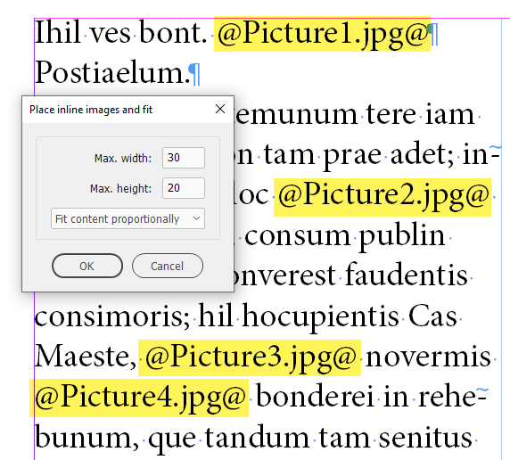
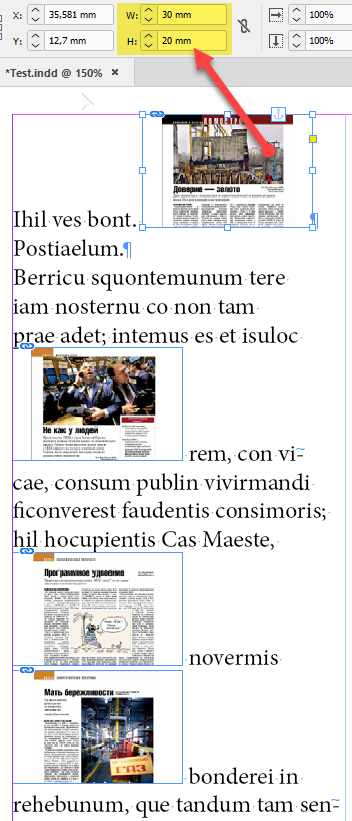
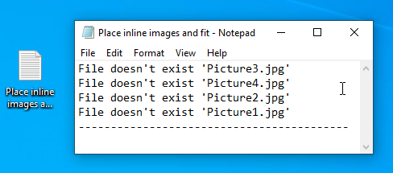
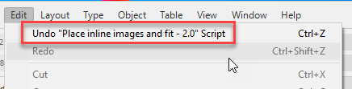
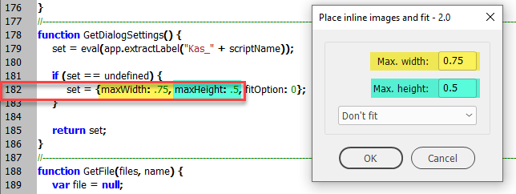

Place inline images and fit
Script for InDesign: written in 2021; version 2.0
This is a modification of the place inline images script which finds text between two @ characters – e.g. @Pencil.tif@ – and replaces it with the image that has the same name.
The original script was written by Peter Kahrel. I found it somewhere on the Adobe scripting forum and reworked it to my liking.
When you run the script, a dialog box appears where you can set the maximum dimensions of the images (in the current document measurement units) before placing them and fit the images using one of the following options:
- Use frame fitting options
- Center content
- Content-aware fit
- Fit content to frame
- Fill frame proportionally
- Fit content proportionally
Before

After

Next you have to choose a folder where the images to be placed are located:

If no images are found for some tags, they will be listed in the report created on the desktop:

You can undo/redo the whole script:

In this new version (2.0):
- I fixed a bug that produced the ‘object is invalid’ error #45.
- If the text gets overset, the script adds additional pages with linked text frames frames right after the current page where the text overflows. The new text frame fits into the page margins. All other settings — like columns number, etc.— are set by InDesign according to defaults in your current document.
- the script places images in tables (except for nested tables: only one level deep)
- only these image types are placed: jpeg, psd, png, gif, ai, eps, bmp, tif. If you need more, feel free to add more extensions to the regex in line 10, or ask me to do this for you.
Important note: As I’ve already mentioned above, the script uses the current document measurement units. I usually work in millimeters. If you live on the other side of the pool and use, say, inches, the default 20 x 30 would be too much for you, I think, so change the defaults in line 182 to more reasonable values for the units you use, like so:

Or, make sure to set correct values on the first run: the script will remember them.
In the future, I’d like to make a version that applies object styles so the user could control much more parameters. However, I am very busy lately so can’t promise if/when I will be able to make it.
Click here to download the script.